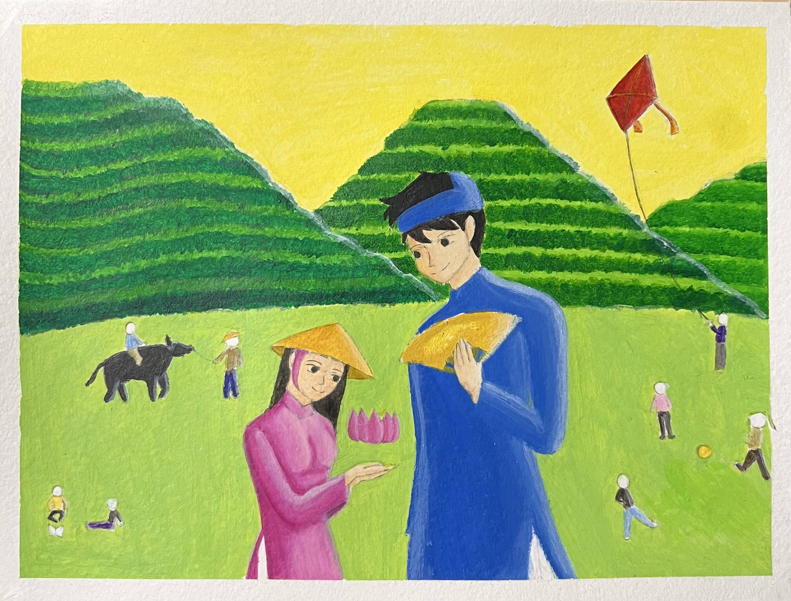

As someone who changes hobbies every three to five business days, here are some of my favorite ways to spend time :D
Drawing is something I have always love to do ever since I was a kid. Some people suggest that I should pursue an art-related major, but I think I enjoy drawing more when I do it purely for entertainment
